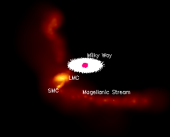

Credit: Kawata, Maddison & Gibson, Swinburne
The Magellanic Stream is a long trail of gas extending from the Magellanic Clouds. Although visible only at radio wavelengths, the Stream extends more than 180 degrees across the sky – almost half way around the Milky Way. At an average distance of 180,000 light years from the Milky Way and spanning roughly 600,000 light years, the Magellanic Stream passes through the Magellanic Clouds and beneath the south galactic pole, showing both a leading and a trailing ‘arm’.
The Stream is thought to have been torn out of the Magellanic Clouds hundreds of millions of years ago in an interaction involving the Milky Way. The precise nature of this interaction is still not known, though two scenarios have been suggested:
- The gas was ram pressure stripped from the Magellanic Clouds (most likely the Small Magellanic Cloud) during the last passage through the disk of the Milky Way.
- The stream is an example of a tidal tail, the result of gravitational interactions between the Magellanic Clouds (again, most likely the Small Magellanic Cloud) and the Milky Way.
Astronomers currently favour the second scenario, that the Magellanic Stream has resulted from tidal interactions, since these interactions naturally produce both the leading and trailing arms observed. However, ram pressure stripping may play a role in shaping the Stream.
Despite numerous searches, no stars associated with the Stream have yet been found.